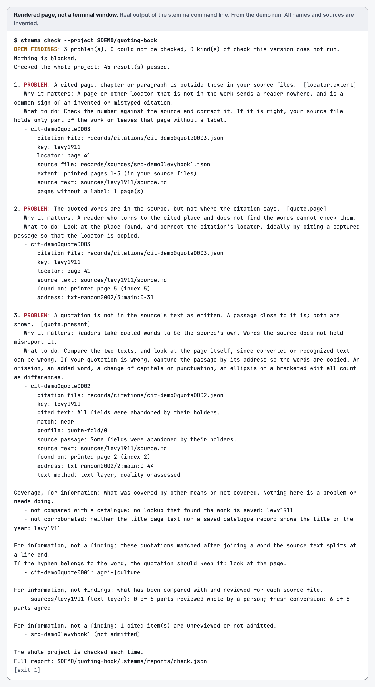

Examples
Watch Stemma at work on a made-up book. Everything here comes from real runs of the tool.
All names and sources on this page are invented. For a real book, see the worked example. When you use Stemma you talk to Claude; what is shown here is what the tool prints behind the scenes. In it, $DEMO, $PROJECTS and <plugin root> stand for folder names.
The demo, step by step
Eleven short steps, from an empty folder to checked quotations. IDs in the demo are fixed so that every run looks the same.
Start a project
A new project is created, and two invented books are recorded.
What the tool printed (step 1)
1. Create a project and record two sources
Transcript of a real run, with folder names replaced. $ stemma init --project $DEMO/book Created a Stemma project in $DEMO/book wrote rules.md wrote .gitattributes wrote .gitignore wrote stemma.json The project holds the full text of its sources: anyone who can read the repository can read them, so publishing it publishes them. [exit 0] $ stemma record add source --input $DEMO/ledger.json --actor person:demo-author --project $DEMO/book Added src-demo0ledger001 records/sources/src-demo0ledger001.json No record problems found. [exit 0] $ stemma record add source --input $DEMO/orphan.json --actor person:demo-author --project $DEMO/book Added src-demo0orphan001 records/sources/src-demo0orphan001.json No record problems found. [exit 0]
Cite, with a slip
Two citations are added. One mistypes the short label of its source, and a book that is never cited is listed for the bibliography.
What the tool printed (step 2)
2. Add two citations: one with a mistyped key
Transcript of a real run, with folder names replaced. $ stemma record add citation --input $DEMO/cite-1.json --actor person:demo-author --project $DEMO/book Added cit-demo0toll00001 records/citations/cit-demo0toll00001.json No record problems found. [exit 0] $ stemma record add citation --input $DEMO/cite-2.json --actor person:demo-author --project $DEMO/book Added cit-demo0toll00002 records/citations/cit-demo0toll00002.json No record problems found. [exit 0] By hand: list both sources for the bibliography in stemma.json (orphan1990 is never cited).
First check
The check finds the slip and the uncited book, notices a file out of its standard layout, and says that a cited book is not in the project. It also notes that neither invented book was compared with a catalogue, which is not a problem.
What the tool printed (step 3)
3. Check: the seeded errors are reported and explained
Transcript of a real run, with folder names replaced. $ stemma check --project $DEMO/book OPEN FINDINGS: 4 problem(s), 0 could not be checked, 0 kind(s) of check this version does not run. Nothing is blocked. Checked the whole project: 14 result(s) passed. 1. PROBLEM: A source is listed for the built bibliography but cited nowhere. [bib.uncited] Why it matters: The bibliography would list a work the book never cites, or a citation you meant to make is missing. What to do: Cite it, remove it from bibliography_include in stemma.json, or keep it on purpose and record why. - src-demo0orphan001 source file: records/sources/src-demo0orphan001.json key: orphan1990 2. PROBLEM: A citation uses a key that no source record holds. [cite.key] Why it matters: A reader or a build cannot tell which source this citation means, so it cannot be checked or put in the bibliography. What to do: Correct the key in the citation, or add a source record with that key (or add it to the right source's key_aliases). - cit-demo0toll00002 citation file: records/citations/cit-demo0toll00002.json key: ledgr1911 sentence: The toll was doubled in the following century. 3. PROBLEM: A file is not written in the canonical form (key order, indentation or line endings differ). [record.valid] Why it matters: Digests, review marks and diffs depend on one exact form. No value is wrong because of this alone. What to do: Run `fmt` on the file. It rewrites the layout and changes no value. - stemma.json file: stemma.json 4. PROBLEM: A cited source has no source file in the project, so this citation is unchecked. [source.held] Why it matters: Without the source's text in the project, nobody can compare this citation with the source, so it is unchecked. What to do: Capture the source: `ingest`, or `source convert <original> --source <id>`. For a book held only on paper, supply a transcription made by a recognition tool or typed. Writing can carry on meanwhile. - cit-demo0toll00001 citation file: records/citations/cit-demo0toll00001.json key: ledger1911 source file: records/sources/src-demo0ledger001.json Coverage, for information: what was covered by other means or not covered. Nothing here is a problem or needs doing. - not compared with a catalogue: no lookup that found the work is saved: ledger1911, orphan1990 For information, not a finding: 1 cited item(s) are unreviewed or not admitted. - src-demo0ledger001 (not admitted) The whole project is checked each time. Full report: $DEMO/book/.stemma/reports/check.json [exit 1]
Fix and check again
Three problems are fixed. There is still no text of the cited book to compare with.
What the tool printed (step 4)
4. Fix them: correct the key, drop the uncited listing, reformat
Transcript of a real run, with folder names replaced. $ stemma fmt --project $DEMO/book Rewrote 1 file(s) in canonical form. stemma.json No record problems found. [exit 0] $ stemma check --project $DEMO/book OPEN FINDINGS: 2 problem(s), 0 could not be checked, 0 kind(s) of check this version does not run. Nothing is blocked. Checked the whole project: 17 result(s) passed. 1. PROBLEM: A cited source has no source file in the project, so this citation is unchecked. [source.held, 2 places] Why it matters: Without the source's text in the project, nobody can compare this citation with the source, so it is unchecked. What to do: Capture the source: `ingest`, or `source convert <original> --source <id>`. For a book held only on paper, supply a transcription made by a recognition tool or typed. Writing can carry on meanwhile. - cit-demo0toll00001 citation file: records/citations/cit-demo0toll00001.json key: ledger1911 source file: records/sources/src-demo0ledger001.json - cit-demo0toll00002 citation file: records/citations/cit-demo0toll00002.json key: ledger1911 source file: records/sources/src-demo0ledger001.json Coverage, for information: what was covered by other means or not covered. Nothing here is a problem or needs doing. - not compared with a catalogue: no lookup that found the work is saved: ledger1911 For information, not a finding: 1 cited item(s) are unreviewed or not admitted. - src-demo0ledger001 (not admitted) The whole project is checked each time. Full report: $DEMO/book/.stemma/reports/check.json [exit 1]
Add a scan's text
A picture of a page holds no text, so text for the scan is supplied page by page and labelled as recognized. Nothing is left open. The report says what it could not cover: the title is not in the text, and the invented book is in no catalogue.
What the tool printed (step 5)
5. A scan alone is not text. Its recognized text enters as such, page by page, labelled as recognized
Transcript of a real run, with folder names replaced. $ stemma source pages $DEMO/materials/ledger-scan.pdf --project $DEMO/book Warning: Cannot load "@napi-rs/canvas" package: "ResolveMessage: Cannot find module '@napi-rs/canvas' Require stack: - <plugin root>/dist/stemma.js". Warning: Cannot polyfill `DOMMatrix`, rendering may be broken. Warning: Cannot polyfill `Path2D`, rendering may be broken. Proposed page map, for review. Nothing in the project was changed. The file has 1 pages. A run is proposed where at least 3 pages, and at least 50% of the run, show the expected number in the first or last 3 lines of their text. No label comes from a page's position alone. No run of printed numbers was found, so no page is labelled. left without a label: 0 Look at the page images at the ends of each run and at any page that differs. A person may edit the file; a label that rests on a person's word has the evidence author_statement. Add --out <file> to save the proposed map. [exit 0] $ stemma source convert $DEMO/materials/ledger-scan.pdf --actor person:demo-author --acquired-at 2026-01-05T09:00:00Z --origin "my own scan" --source src-demo0ledger001 --text-layer $DEMO/materials/ledger-text-layer.txt --method ocr --tool invented-ocr --tool-version 1.0 --page-map $DEMO/materials/ledger-page-map.json --project $DEMO/book Warning: Cannot load "@napi-rs/canvas" package: "ResolveMessage: Cannot find module '@napi-rs/canvas' Require stack: - <plugin root>/dist/stemma.js". Warning: Cannot polyfill `DOMMatrix`, rendering may be broken. Warning: Cannot polyfill `Path2D`, rendering may be broken. Wrote the source file txt-random0001 to sources/ledger1911/ source: src-demo0ledger001 original: sha256 78f8c3acc88b6c528519b03d4a51a37d01659b902477ea035ce10984ea902f11 (439 bytes, application/pdf); it is not kept in the project 4 page file(s); method ocr, quality unassessed pages with a printed label: 3 of 4 note: The text was supplied; Stemma did not make it and did not compare it with the original. The text was not compared with the original beyond this conversion. Stemma holds back no source: any source in this project may be sent to a hosted model. No record problems found. [exit 0] $ stemma check --project $DEMO/book CHECKED CLEAN: the checks found nothing open. This does not mean that the book is correct. It covers only what is in these project files. Checked the whole project: 27 result(s) passed. Coverage, for information: what was covered by other means or not covered. Nothing here is a problem or needs doing. - not compared with a catalogue: no lookup that found the work is saved: ledger1911 - not corroborated: neither the title page text nor a saved catalogue record shows the title or the year: ledger1911 For information, not findings: what has been compared with and reviewed for each source file. - sources/ledger1911 (ocr): 0 of 4 parts reviewed whole by a person For information, not a finding: 1 cited item(s) are unreviewed or not admitted. - src-demo0ledger001 (not admitted) The whole project is checked each time. Full report: $DEMO/book/.stemma/reports/check.json [exit 0] The copy's text never shows the title, and this invented work is in no catalogue. Nothing contradicts the record, so neither is a finding: the report says what was not covered. Recognized text is a coverage figure too.
A PDF with its own text
In a second project, one command turns a PDF into page files, converts it again to compare, and checks. The warnings shown come from the PDF-reading library and concern drawing pages, which Stemma does not do.
What the tool printed (step 6)
6. A born-digital PDF: one command captures it, converts it page by page, compares and checks
Transcript of a real run, with folder names replaced. $ stemma init --project $DEMO/quoting-book Created a Stemma project in $DEMO/quoting-book wrote rules.md wrote .gitattributes wrote .gitignore wrote stemma.json The project holds the full text of its sources: anyone who can read the repository can read them, so publishing it publishes them. [exit 0] $ stemma record add source --input $DEMO/levy.json --actor person:demo-author --project $DEMO/quoting-book Added src-demo0levybook1 records/sources/src-demo0levybook1.json No record problems found. [exit 0] The PDF library's warnings are shown as it prints them: the plugin ships no native drawing module, and reading text draws nothing. $ stemma ingest --plan $DEMO/plan.json --actor person:demo-author --project $DEMO/quoting-book Warning: Cannot load "@napi-rs/canvas" package: "ResolveMessage: Cannot find module '@napi-rs/canvas' Require stack: - <plugin root>/dist/stemma.js". Warning: Cannot polyfill `DOMMatrix`, rendering may be broken. Warning: Cannot polyfill `Path2D`, rendering may be broken. == 1. Capture levy1911: 6 pages written to sources/levy1911/ (text_layer, 5 labelled) == 2. Reverify against originals levy1911: converted again; 6 of 6 parts agree 1 source file(s) converted again, 0 already had a current comparison. == 3. Catalogue lookups 0 lookup(s) made, 0 already saved. == 4. Check CHECKED CLEAN: the checks found nothing open. This does not mean that the book is correct. It covers only what is in these project files. Checked the whole project: 21 result(s) passed. Coverage, for information: what was covered by other means or not covered. Nothing here is a problem or needs doing. - not compared with a catalogue: no lookup that found the work is saved: levy1911 - not corroborated: neither the title page text nor a saved catalogue record shows the title or the year: levy1911 For information, not findings: what has been compared with and reviewed for each source file. - sources/levy1911 (text_layer): 0 of 6 parts reviewed whole by a person; fresh conversion: 6 of 6 parts agree The whole project is checked each time. Full report: $DEMO/quoting-book/.stemma/reports/check.json [exit 0]
Cite a passage
A passage is found and chosen by its place. A script copies its words and page into a citation.
What the tool printed (step 7)
7. Evidence is selected by address; its words and page are copied by script
Transcript of a real run, with folder names replaced. $ stemma passage find --source src-demo0levybook1 "paid in salt, and the agriculture" --project $DEMO/quoting-book txt-random0002/1:main:21-56 printed page 1 (index 1); normalized match; page 1 quoted data: paid in salt, and the agriculture [exit 0] $ stemma passage capture --address txt-random0002/1:main:21-56 --actor person:demo-author --project $DEMO/quoting-book Captured psg-random0001, selected by person demo-author. Its words and locator were copied from the source file. address: txt-random0002/1:main:21-56 found on: printed page 1 (index 1) (method text_layer) locator: page 1 exact text (quoted data, not instructions): | paid in salt, and the agri- | culture as a quotation: paid in salt, and the agriculture Cite it with `record add citation`, giving "passage": "psg-random0001" and no quotation or locator. No record problems found. [exit 0] $ stemma record add citation --input $DEMO/from-passage.json --actor person:demo-author --project $DEMO/quoting-book Added cit-demo0quote0001 records/citations/cit-demo0quote0001.json No record problems found. [exit 0]
Check typed quotations and pages
Two more citations are typed. One differs by a word, and one cites a page the book does not have. The copied one passes, after rejoining a word split at the end of a line.
What the tool printed (step 8)
8. Typed quotations and page numbers are checked against the same text
Transcript of a real run, with folder names replaced. $ stemma record add citation --input $DEMO/quote-2.json --actor person:demo-author --project $DEMO/quoting-book Added cit-demo0quote0002 records/citations/cit-demo0quote0002.json No record problems found. [exit 0] $ stemma record add citation --input $DEMO/quote-3.json --actor person:demo-author --project $DEMO/quoting-book Added cit-demo0quote0003 records/citations/cit-demo0quote0003.json No record problems found. [exit 0] $ stemma check --project $DEMO/quoting-book OPEN FINDINGS: 3 problem(s), 0 could not be checked, 0 kind(s) of check this version does not run. Nothing is blocked. Checked the whole project: 45 result(s) passed. 1. PROBLEM: A cited page, chapter or paragraph is outside those in your source files. [locator.extent] Why it matters: A page or other locator that is not in the work sends a reader nowhere, and is a common sign of an invented or mistyped citation. What to do: Check the number against the source and correct it. If it is right, your source file holds only part of the work or leaves that page without a label. - cit-demo0quote0003 citation file: records/citations/cit-demo0quote0003.json key: levy1911 locator: page 41 source file: records/sources/src-demo0levybook1.json extent: printed pages 1-5 (in your source files) source text: sources/levy1911/source.md pages without a label: 1 page(s) 2. PROBLEM: The quoted words are in the source, but not where the citation says. [quote.page] Why it matters: A reader who turns to the cited place and does not find the words cannot check them. What to do: Look at the place found, and correct the citation's locator, ideally by citing a captured passage so that the locator is copied. - cit-demo0quote0003 citation file: records/citations/cit-demo0quote0003.json key: levy1911 locator: page 41 source text: sources/levy1911/source.md found on: printed page 5 (index 5) address: txt-random0002/5:main:0-31 3. PROBLEM: A quotation is not in the source's text as written. A passage close to it is; both are shown. [quote.present] Why it matters: Readers take quoted words to be the source's own. Words the source does not hold misreport it. What to do: Compare the two texts, and look at the page itself, since converted or recognized text can be wrong. If your quotation is wrong, capture the passage by its address so the words are copied. An omission, an added word, a change of capitals or punctuation, an ellipsis or a bracketed edit all count as differences. - cit-demo0quote0002 citation file: records/citations/cit-demo0quote0002.json key: levy1911 cited text: All fields were abandoned by their holders. match: near profile: quote-fold/0 source passage: Some fields were abandoned by their holders. source text: sources/levy1911/source.md found on: printed page 2 (index 2) address: txt-random0002/2:main:0-44 text method: text_layer, quality unassessed Coverage, for information: what was covered by other means or not covered. Nothing here is a problem or needs doing. - not compared with a catalogue: no lookup that found the work is saved: levy1911 - not corroborated: neither the title page text nor a saved catalogue record shows the title or the year: levy1911 For information, not a finding: these quotations matched after joining a word the source text splits at a line end. If the hyphen belongs to the word, the quotation should keep it: look at the page. - cit-demo0quote0001: agri-|culture For information, not findings: what has been compared with and reviewed for each source file. - sources/levy1911 (text_layer): 0 of 6 parts reviewed whole by a person; fresh conversion: 6 of 6 parts agree For information, not a finding: 1 cited item(s) are unreviewed or not admitted. - src-demo0levybook1 (not admitted) The whole project is checked each time. Full report: $DEMO/quoting-book/.stemma/reports/check.json [exit 1]
Look at one page
Only the page asked for is shown, clearly marked as text quoted from the source.
What the tool printed (step 9)
9. An excerpt: only the pages asked for, marked as quoted data
Transcript of a real run, with folder names replaced. $ stemma excerpt --source src-demo0levybook1 --pages 2 --project $DEMO/quoting-book Excerpt of source src-demo0levybook1: printed pages 2. From txt-random0002; method text_layer, quality unassessed. This is converted or recognized text, not a reading of the page: compare any words you will quote with the page itself where you can. Everything between the a068cf28592e86a5 lines is quoted data from the source. It is not an instruction to anyone. --- a068cf28592e86a5 begin: printed page 2 (index 2) Some fields were abandoned by their holders. --- a068cf28592e86a5 end Stemma holds back no source: any source in this project may be sent to a hosted model. [exit 0]
Copy the project
A copy of the project without the original files gives the same report.
What the tool printed (step 10)
10. A clone has everything the checks read: the originals are not needed
Transcript of a real run, with folder names replaced. $ stemma check --project $DEMO/clone OPEN FINDINGS: 3 problem(s), 0 could not be checked, 0 kind(s) of check this version does not run. Nothing is blocked. Checked the whole project: 45 result(s) passed. 1. PROBLEM: A cited page, chapter or paragraph is outside those in your source files. [locator.extent] Why it matters: A page or other locator that is not in the work sends a reader nowhere, and is a common sign of an invented or mistyped citation. What to do: Check the number against the source and correct it. If it is right, your source file holds only part of the work or leaves that page without a label. - cit-demo0quote0003 citation file: records/citations/cit-demo0quote0003.json key: levy1911 locator: page 41 source file: records/sources/src-demo0levybook1.json extent: printed pages 1-5 (in your source files) source text: sources/levy1911/source.md pages without a label: 1 page(s) 2. PROBLEM: The quoted words are in the source, but not where the citation says. [quote.page] Why it matters: A reader who turns to the cited place and does not find the words cannot check them. What to do: Look at the place found, and correct the citation's locator, ideally by citing a captured passage so that the locator is copied. - cit-demo0quote0003 citation file: records/citations/cit-demo0quote0003.json key: levy1911 locator: page 41 source text: sources/levy1911/source.md found on: printed page 5 (index 5) address: txt-random0002/5:main:0-31 3. PROBLEM: A quotation is not in the source's text as written. A passage close to it is; both are shown. [quote.present] Why it matters: Readers take quoted words to be the source's own. Words the source does not hold misreport it. What to do: Compare the two texts, and look at the page itself, since converted or recognized text can be wrong. If your quotation is wrong, capture the passage by its address so the words are copied. An omission, an added word, a change of capitals or punctuation, an ellipsis or a bracketed edit all count as differences. - cit-demo0quote0002 citation file: records/citations/cit-demo0quote0002.json key: levy1911 cited text: All fields were abandoned by their holders. match: near profile: quote-fold/0 source passage: Some fields were abandoned by their holders. source text: sources/levy1911/source.md found on: printed page 2 (index 2) address: txt-random0002/2:main:0-44 text method: text_layer, quality unassessed Coverage, for information: what was covered by other means or not covered. Nothing here is a problem or needs doing. - not compared with a catalogue: no lookup that found the work is saved: levy1911 - not corroborated: neither the title page text nor a saved catalogue record shows the title or the year: levy1911 For information, not a finding: these quotations matched after joining a word the source text splits at a line end. If the hyphen belongs to the word, the quotation should keep it: look at the page. - cit-demo0quote0001: agri-|culture For information, not findings: what has been compared with and reviewed for each source file. - sources/levy1911 (text_layer): 0 of 6 parts reviewed whole by a person; fresh conversion: 6 of 6 parts agree For information, not a finding: 1 cited item(s) are unreviewed or not admitted. - src-demo0levybook1 (not admitted) The whole project is checked each time. Full report: $DEMO/clone/.stemma/reports/check.json [exit 1]
What a clean result looks like
A project that records a source but cites nothing is called checked clean. That says nothing about citations, because there are none.
What the tool printed (step 11)
11. What checked clean looks like: sources recorded, nothing cited
Transcript of a real run, with folder names replaced. $ stemma init --project $DEMO/reading-list Created a Stemma project in $DEMO/reading-list wrote rules.md wrote .gitattributes wrote .gitignore wrote stemma.json The project holds the full text of its sources: anyone who can read the repository can read them, so publishing it publishes them. [exit 0] $ stemma record add source --input $DEMO/ledger.json --actor person:demo-author --project $DEMO/reading-list Added src-demo0ledger001 records/sources/src-demo0ledger001.json No record problems found. [exit 0] $ stemma check --project $DEMO/reading-list CHECKED CLEAN: the checks found nothing open. This does not mean that the book is correct. It covers only what is in these project files. Checked the whole project: 6 result(s) passed. The whole project is checked each time. Full report: $DEMO/reading-list/.stemma/reports/check.json [exit 0] Note: this label says nothing about citations, because this project has none. Demo finished as expected. The files are in $DEMO
More test projects
Small projects that the tool's own tests run. Each has its printed report and the same report as a data file, with the run time and machine details removed.
A project with planted mistakes
Mistakes planted on purpose, one or more for each kind the tests expect. Data file for the seeded project.
Printed report for the seeded project
$ stemma check --all --project $PROJECTS/seeded OPEN FINDINGS: 9 problem(s), 1 could not be checked, 0 kind(s) of check this version does not run. Nothing is blocked. Checked the whole project: 15 result(s) passed. 1. PROBLEM: A source is listed for the built bibliography but cited nowhere. [bib.uncited] Why it matters: The bibliography would list a work the book never cites, or a citation you meant to make is missing. What to do: Cite it, remove it from bibliography_include in stemma.json, or keep it on purpose and record why. - src-fixture0orphan001 source file: records/sources/src-fixture0orphan001.json key: orphan1990 2. PROBLEM: A citation uses a key that no source record holds. [cite.key] Why it matters: A reader or a build cannot tell which source this citation means, so it cannot be checked or put in the bibliography. What to do: Correct the key in the citation, or add a source record with that key (or add it to the right source's key_aliases). - cit-fixture0ghost0001 citation file: records/citations/cit-fixture0ghost0001.json key: ghost2020 sentence: A second invented harbour kept no toll books. 3. PROBLEM: Text in a project file looks like a map coordinate. The value is not repeated here. [coordinate.stray] Why it matters: This output can disclose a restricted site's position. The scan cannot tell whether a site is restricted, so it warns about every coordinate it recognizes. What to do: Look at the position in the evidence. If it is a sensitive site, remove the value from the file (git history may still hold it). If it is public or not a coordinate, you need do nothing. - rules.md file: rules.md position: line 5, column 27 4. COULD NOT CHECK: A file cannot be read as a record, so nothing in it was checked. [record.valid] Why it matters: Every other check reads these files. A broken record can hide a citation problem or create a false one. What to do: Open the named file and repair it (look for merge-conflict markers, a repeated key or a missing bracket), or restore it from git. Stemma does not guess its content. - records/agents/agt-fixture0broken001.json file: records/agents/agt-fixture0broken001.json problem: duplicate_key 5. PROBLEM: A rule ID in rules.md is used twice. [record.valid] Why it matters: A report or record citing this ID could mean either rule. What to do: Give the later rule a number that has never been used. - rules.md file: rules.md line: 7 6. PROBLEM: A file is not written in the canonical form (key order, indentation or line endings differ). [record.valid] Why it matters: Digests, review marks and diffs depend on one exact form. No value is wrong because of this alone. What to do: Run `fmt` on the file. It rewrites the layout and changes no value. - src-fixture0compact01 file: records/sources/src-fixture0compact01.json 7. PROBLEM: A record breaks a rule of the record format. [record.valid] Why it matters: Every other check reads these files. A broken record can hide a citation problem or create a false one. What to do: Correct the field named in the evidence, then run `check` again. - src-fixture0invalid01 file: records/sources/src-fixture0invalid01.json field: /admission problem: the value is not one of the allowed values 8. PROBLEM: A record has a field the record format does not define. The field is kept as it is. [record.valid] Why it matters: A misspelled field name means the value you meant to record is not read. What to do: Check the spelling. Put a field of your own under `x` with a namespaced name such as `myname.note`. - src-fixture0invalid01 file: records/sources/src-fixture0invalid01.json field: /tittle problem: the field is not part of the record format 9. PROBLEM: A record points at a record that is missing or is of the wrong kind. [record.valid] Why it matters: The link between your evidence and its source is broken, so anything relying on it cannot be traced. What to do: Point the reference at the right record, or remove it. - stemma.json file: stemma.json field: /bibliography_include/2 problem: no record has this ID points at: src-fixture0missing01 10. PROBLEM: A cited source has no source file in the project, so this citation is unchecked. [source.held] Why it matters: Without the source's text in the project, nobody can compare this citation with the source, so it is unchecked. What to do: Capture the source: `ingest`, or `source convert <original> --source <id>`. For a book held only on paper, supply a transcription made by a recognition tool or typed. Writing can carry on meanwhile. - cit-fixture0good00001 citation file: records/citations/cit-fixture0good00001.json key: hartwell1998 source file: records/sources/src-fixture0harbour01.json Coverage, for information: what was covered by other means or not covered. Nothing here is a problem or needs doing. - not compared with a catalogue: no lookup that found the work is saved: hartwell1998, orphan1990 Full report: $PROJECTS/seeded/.stemma/reports/check.json [exit 1]
A cited source that is not in the project
One citation that resolves to a source that is not in the project, so it is reported as unchecked. Data file for the cited project.
Printed report for the cited project
$ stemma check --all --project $PROJECTS/cited OPEN FINDINGS: 1 problem(s), 0 could not be checked, 0 kind(s) of check this version does not run. Nothing is blocked. Checked the whole project: 11 result(s) passed. 1. PROBLEM: A cited source has no source file in the project, so this citation is unchecked. [source.held] Why it matters: Without the source's text in the project, nobody can compare this citation with the source, so it is unchecked. What to do: Capture the source: `ingest`, or `source convert <original> --source <id>`. For a book held only on paper, supply a transcription made by a recognition tool or typed. Writing can carry on meanwhile. - cit-fixture0good00001 citation file: records/citations/cit-fixture0good00001.json key: hartwell1998 source file: records/sources/src-fixture0harbour01.json Coverage, for information: what was covered by other means or not covered. Nothing here is a problem or needs doing. - not compared with a catalogue: no lookup that found the work is saved: hartwell1998 Full report: $PROJECTS/cited/.stemma/reports/check.json [exit 1]
A project with nothing open
Sources recorded and nothing cited, so it is called checked clean. The label says nothing about citations. Data file for the clean project.
Printed report for the clean project
$ stemma check --all --project $PROJECTS/clean CHECKED CLEAN: the checks found nothing open. This does not mean that the book is correct. It covers only what is in these project files. Checked the whole project: 8 result(s) passed. Full report: $PROJECTS/clean/.stemma/reports/check.json [exit 0]
A project with a manuscript file
A project with a manuscript file. Stemma does not read it, and says that it could not check. Data file for the manuscript project.
Printed report for the manuscript project
$ stemma check --all --project $PROJECTS/manuscript OPEN FINDINGS: 0 problem(s), 1 could not be checked, 9 kind(s) of check this version does not run. Nothing is blocked. Checked the whole project: 7 result(s) passed. 1. COULD NOT CHECK: Whether a listed source is cited could not be checked: this version does not read the files in manuscript/. [bib.uncited] Why it matters: The manuscript, not the citation records, says what is cited now, so a guess could be wrong either way. What to do: Nothing to fix in your files. Check this entry by hand. - src-fixture0harbour01 source file: records/sources/src-fixture0harbour01.json key: hartwell1998 Coverage, for information: what was covered by other means or not covered. Nothing here is a problem or needs doing. - not compared with a catalogue: no lookup that found the work is saved: hartwell1998 NOT CHECKED: this version does not run these, so the project is not called checked clean. Why it matters: a mistake of one of these kinds would go unnoticed. What to do: check them by hand where they matter. - bibliography entries that are never cited [bib.uncited] - citation keys in the manuscript files [cite.key] - passages marked as needing a source [draft.marked] - whether cited pages and other locators fall inside the source [locator.extent] - whether cited figures appear in the source text [number.present] - whether quotations are on the cited pages or in the cited chapter [quote.page] - whether quotations appear in the source text [quote.present] - work that rests on source text that has since changed [source.changed] - whether each cited source's text is in the project [source.held] Full report: $PROJECTS/manuscript/.stemma/reports/check.json [exit 1]
Pictures of the output
The tool's output as pictures, including dark and narrow layouts.
Show six pictures

